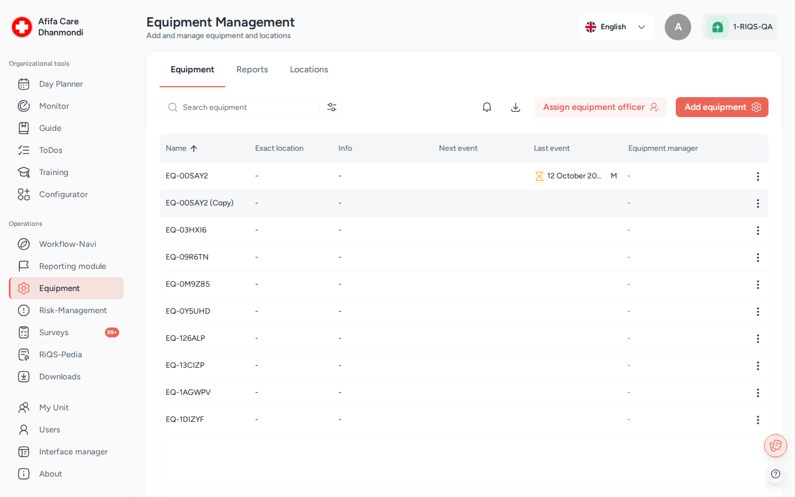

Equipment¶
In one sentence: Keep a register of every device in your units, plan and record its maintenance and validation, and keep its manuals, contacts and reports in one place. Menu: Equipment · Status: Live (RiQS AI on the device page is in progress)

Equipment Management: the device list, with tabs for Reports and Locations. Screens show test data.
What it is¶
Medical practices and clinics depend on devices: sterilisers, ECGs, fridges, glucose meters. Many must be serviced or checked on a fixed schedule, and auditors want proof that this happened. The Equipment module is the logbook for all of them.
Each device gets a record with its name, location, serial and other numbers, supplier, manufacturer, contacts and documents. On that record you plan maintenance (servicing) and validation (checking that it still works correctly). RIQS reminds the right people when an event is due, collects their answers and forms, and asks for approval if needed. External service companies can complete their part through a secure link, without a RIQS account.
Each device also has a QR code. Print it and stick it on the device so it is easy to identify.
Key terms¶
| Term | Meaning |
|---|---|
| Equipment | One device or piece of equipment, registered in one unit. |
| Location | A place where equipment stands, such as a room or building, with an address. Exact location is free text for the precise spot, for example "Shelf 2, left". |
| Maintenance | A planned service of a device (shown as M in the list). |
| Validation | A planned check that the device still works as required (shown as V in the list). |
| Event | One scheduled maintenance or validation. The list shows the Latest event and Next event. |
| Preparation time | How many days (1–30) before the due date the event starts, so people have time to prepare. |
| Executing group | The users who must carry out the event. |
| Approvers | The users who must approve the result, when an approval process is required. |
| Equipment Officer | A function role. The officer looks after all equipment of a unit (unit level) or of the whole organisation (organisation level). |
| Equipment Manager | A person responsible for one specific device. |
| Supplier | The service provider of the device, chosen from the unit's suppliers. |
| External user | A person from a service company who completes an event through an emailed link. |
| Equipment report | A report built from a report template, for example a validation report. A preparation report may have to be done first. |
| UDI number | Unique Device Identification number, used for medical devices. |
Who uses it¶
| Role | What they typically do here |
|---|---|
| RiQS Administrator | Supports clients. Can see and manage all equipment. Cannot create fault reports. |
| Group Administrator | Manages equipment in the group's organisations and names Equipment Officers at organisation and unit level. |
| Administrator | Manages equipment across all units and names Equipment Officers at organisation and unit level. |
| Power User | Manages the unit's equipment, locations and maintenance, and names unit-level Equipment Officers. |
| Management | Adds, edits and copies equipment, plans maintenance, names Equipment Managers for devices, and carries out events they are assigned to. Cannot delete. |
| Professional | Views and adds equipment and locations, downloads QR codes, reports faults, and carries out events they are assigned to. Edits equipment and plans events only as Equipment Officer or Equipment Manager. |
| Equipment Officer | Manages equipment, locations, events and reports for their unit or organisation, and names unit-level Equipment Officers, whatever their role. |
| Equipment Manager | Plans and edits events for the devices they manage. |
How it works¶
- Set up locations. On the Location tab, add the rooms or sites where equipment stands.
- Register the device. Add the equipment with its location, supplier and numbers. RIQS creates its QR code.
- Attach what belongs to it. Add files (such as manuals and forms from RiQS-Pedia), guides, report templates and photos. Name Equipment Managers.
- Plan events. Schedule maintenance and validation, once or repeating, with executing users, approvers and optional external service providers.
- Get reminded. On the start day of the event (due date minus preparation time), RIQS emails the responsible people. If a form is attached, it also creates a task for the executing users, due on the event date.
- Carry out and record. The executing users (or the external user) complete the attached guide, form or template and click Mark as done, with remarks and attachments.
- Approve. If approval is required, the approvers review and approve. Then the event is completed.
- Report. Download lists and reports for audits.
An event moves through these statuses:
Pending → Submitted → In progress → Done
| Status | Meaning | What moves it on |
|---|---|---|
| Pending | Planned, nobody has answered yet. | The first executing user marks it as done. |
| Submitted | At least one answer is in, but not all, or approval is still needed. | More answers, or approvals. |
| In progress | All executing users answered; waiting for approval. | The approvers approve. |
| Done | Completed. It can no longer be deleted. | — |
Without an approval process, the event is Done as soon as all executing users have answered (or as soon as one person answers if no executing users were named). An event documented as a past maintenance or past validation is Done right away.
How to …¶
How to add a location¶
Who can do this: All roles 1. Open Equipment and go to the Location tab. 2. Click Add Location. 3. Enter a Name and Remarks. Enter the address, or pick a service provider's address from the unit's contacts. You can place a pin on the map and add photos. 4. Click Save.
Result: The location appears in the list and can be chosen for equipment.
How to add equipment¶
Who can do this: All roles 1. Open Equipment and click Add Equipment. 2. Fill in the required fields: unit (Select Unit), Equipment Name, Location and Suppliers. 3. Add optional details: Exact location, Serial number, Internal number, Installation number, UDI number, Year of manufacture, Date of purchase, Placing in service, Manufacturer, category and sub-category, Additional information fields, Contacts and Remarks. 4. Optionally choose which user qualifications (User additional information) are needed to work with the device. 5. Save.
Result: The equipment appears in the list. Its QR code is created in the background.
How to edit, copy or delete equipment¶
Who can do this: see Who can do what 1. Open the equipment. 2. Click the More (⋮) menu and choose Edit, Copy or Delete. 3. Copy opens a new equipment form pre-filled from this one. 4. To change only the location, use Update location on the Info tab. Every change is kept in the Location Log.
Result: The record is updated, copied or removed. Deleting equipment also deletes all its events, and the people involved get an email about the deleted events.
How to schedule a maintenance or validation¶
Who can do this: RiQS Administrator, Group Administrator, Administrator, Power User, Management and Equipment Officers. Professionals only as Equipment Officer or Equipment Manager of this device. 1. Open the equipment and go to the Maintenance or Validation tab. 2. Click Schedule. 3. Choose Maintenance or Validation. 4. Set the Date and Preparation time. For a repeating event, set the recurrence. To record something that already happened, choose to schedule a past maintenance or validation. 5. Choose the Executing users. Optionally turn on the approval process, choose the type, and pick Approvers. 6. Optionally attach a guide, a RiQS-Pedia Form, an Interactive Form or a report template, and choose external service providers. Only items already assigned to this device are offered. 7. Optionally require an electronic signature, then click Save.
Result: The event appears under Upcoming Events. A past event appears under Past Events as completed, without reminders or tasks.
How to complete a maintenance or validation¶
Who can do this: The executing users assigned to the event. The RiQS Administrator can also complete events. 1. Open the event from the equipment, your Cockpit or the reminder email. 2. Complete the attached guide, form or template, if there is one. 3. Click Mark as done, add remarks and attachments, and submit.
Result: Your answer is saved and the status moves on. If approval is required, the approvers can now Review and approve.
How an external service provider completes an event¶
Who can do this: The service provider named on the event 1. The provider opens the link from the email. 2. RIQS sends a verification code to the provider's email address. The provider enters it. 3. The provider sees the equipment information and its events, and can download the QR code. 4. On the event, the provider clicks Mark as Done, adds remarks and files, and saves. This is not possible before the event's start date.
Result: The provider's answer is stored on the event under the supplier response.
How to name Equipment Officers and Equipment Managers¶
Who can do this: Organisation-level officers: RiQS Administrator, Group Administrator, Administrator. Unit-level officers: the same, plus Power User and Equipment Officer. Managers: RiQS Administrator, Group Administrator, Administrator, Power User, Management and Equipment Officer. 1. To name officers, click Assign Officer on the equipment list. Choose organisation level or unit level, the user type and the users. 2. To name an Equipment Manager for one device, use the row menu on the equipment list. Any user except the RiQS Administrator can be chosen. 3. Save.
Result: The people appear in the responsibility section of the equipment details and get the rights of their function.
How to download the QR code and reports¶
Who can do this: QR code: all roles. Reports: RiQS Administrator, Group Administrator, Administrator, Power User, Management and Equipment Officers. Professionals only as Equipment Officer or Equipment Manager. 1. For the QR code: open the equipment, click More (⋮) and choose Download QR code. The label shows the numbers that exist for the device (device, serial, internal). 2. For one device: click Download report and choose Report (XLSX) or Report (DOCX). 3. For the list: on the Equipment tab, click Download report and choose this unit or all units. 4. Equipment reports made from templates are on the Reports tab. Filter by status: Created, Completed, Partially approved, Approved, Signed.
Result: The file is downloaded. The Excel list includes location name, address and exact location.
How to report a fault¶
Who can do this: All roles except RiQS Administrator (see Rules) 1. Open the equipment. The Info tab shows a fault summary (New Malfunction, In Progress, Completed). 2. Click Create fault report.
Result: RIQS opens the fault report form in Incident Reports. The fault report shows the device's exact location.
Rules to know¶
- Required to add equipment: unit, name (up to 100 characters), location and supplier. Year of manufacture must be a 4-digit year from 1900 to this year.
- Reminders: on the event's start day (due date minus preparation time) RIQS emails the responsible people. If a form is attached, a task is created for the executing users, due on the event date.
- Past events are saved as completed and trigger no emails or tasks.
- Approval types: a standard approval needs at least one approver. The four-eye and six-eye principles need at least two.
- Done events cannot be deleted. Select all and bulk delete only include events that are not done.
- Deleting a location first checks whether anything still uses it. If so, deletion is blocked.
- Deleting equipment deletes all its events and emails the people involved.
- Fault reports: RiQS Administrators cannot create them. If the unit's fault management is set to "unit without insight", Administrators and Group Administrators cannot either.
- Audit-safe mode: only the RiQS Administrator can delete equipment, locations, events or reports. Others deactivate instead. See Audit-safe mode.
- Manuals and RiQS AI: manuals attached from RiQS-Pedia are prepared for RiQS AI, so the AI can answer questions about them in RiQS-Pedia. The Ask RiQS AI button on the equipment page is visible but not working yet (in progress).
- Planned: planning a special shift in the Shift Plan directly from a maintenance or validation event. Not built yet.
Who can do what¶
"Officer" means an Equipment Officer for this unit or organisation. "Manager" means the Equipment Manager of this device.
| Action | RiQS Administrator | Group Administrator | Administrator | Power User | Management | Professional | Equipment Officer |
|---|---|---|---|---|---|---|---|
| See equipment, details and events | ✅ | ✅ | ✅ | ✅ | ✅ | ✅ | ✅ |
| Add / copy equipment | ✅ | ✅ | ✅ | ✅ | ✅ | ✅ | ✅ |
| Edit equipment and maintenance details | ✅ | ✅ | ✅ | ✅ | ✅ | Only as officer or manager | ✅ |
| Select qualifications and authorisation groups | ✅ | ✅ | ✅ | ✅ | ✅ | ❌ | ✅ |
| Activate / deactivate equipment | ✅ | ✅ | ✅ | ✅ | ✅ | ❌ | ✅ |
| Delete equipment (regular) | ✅ | ✅ | ✅ | ✅ | ❌ | ❌ | ✅ |
| Delete equipment (audit-safe mode) | ✅ | ❌ | ❌ | ❌ | ❌ | ❌ | ❌ |
| Download QR code | ✅ | ✅ | ✅ | ✅ | ✅ | ✅ | ✅ |
| Add / edit a location | ✅ | ✅ | ✅ | ✅ | ✅ | ✅ | ✅ |
| Activate / deactivate a location | ✅ | ✅ | ✅ | ✅ | ✅ | ❌ | ✅ |
| Delete a location (regular) | ✅ | ✅ | ✅ | ✅ | ❌ | ❌ | ✅ |
| Delete a location (audit-safe mode) | ✅ | ❌ | ❌ | ❌ | ❌ | ❌ | ❌ |
| Schedule / edit events | ✅ | ✅ | ✅ | ✅ | ✅ | Only as officer or manager | ✅ |
| Activate / deactivate events | ✅ | ✅ | ✅ | ✅ | ✅ | ❌ | ✅ |
| Delete events (regular) | ✅ | ✅ | ✅ | ✅ | ❌ | ❌ | ✅ |
| Delete events (audit-safe mode) | ✅ | ❌ | ❌ | ❌ | ❌ | ❌ | ❌ |
| Complete an event | ✅ | If assigned | If assigned | If assigned | If assigned | If assigned | If assigned |
| Approve an event or report | ❌ | If assigned | If assigned | If assigned | If assigned | If assigned | If assigned |
| Name organisation-level Equipment Officers | ✅ | ✅ | ✅ | ❌ | ❌ | ❌ | ❌ |
| Name unit-level Equipment Officers | ✅ | ✅ | ✅ | ✅ | ❌ | ❌ | ✅ |
| Name an Equipment Manager | ✅ | ✅ | ✅ | ✅ | ✅ | ❌ | ✅ |
| Create and download reports (this unit or all units) | ✅ | ✅ | ✅ | ✅ | ✅ | Only as officer or manager | ✅ |
| Attach an equipment report (with or without preparation report) | ✅ | ✅ | ✅ | ✅ | ✅ | Only as officer or manager | ✅ |
| Activate / deactivate reports | ✅ | ✅ | ✅ | ✅ | ✅ | ❌ | ✅ |
| Delete reports (regular) | ✅ | ✅ | ✅ | ✅ | ❌ | ❌ | ✅ |
| Delete reports (audit-safe mode) | ✅ | ❌ | ❌ | ❌ | ❌ | ❌ | ❌ |
| Delete an approved report | ✅ | ❌ | ❌ | ❌ | ❌ | ❌ | ❌ |
| Create a fault report | ❌ | ✅ | ✅ | ✅ | ✅ | ✅ | ✅ |
Who can be chosen as organisation-level officer: Group Administrator, Administrator, Power User and Management users (and existing Equipment Officers). Who can be chosen as unit-level officer or as Equipment Manager: every role except the RiQS Administrator.
Connected modules¶
- RiQS-Pedia: manuals, forms and templates attached to equipment come from here. RiQS AI answers questions about attached manuals.
- Process Guide: guides can be attached to a device and to its events.
- Interactive documents: interactive forms can be filled in during an event.
- Cockpit: event tasks for executing users appear here.
- Incident Reports: fault reports are created from a device and show its exact location.
- Organisation & units: the unit's suppliers and service providers are chosen when adding equipment.
- Interface Manager: equipment can be imported in bulk.
- Risk Management: device-related risks are recorded there.
Open questions¶
- Management and Professional adding or copying equipment. The Roles & Rights sheet says yes, the feature list says no. This page follows the Roles & Rights sheet. Please confirm.
- Professional editing equipment. The Roles & Rights sheet says "only as officer or manager", the feature list says no. Please confirm.
- Unit-level Equipment Officer. The feature list says only Power Users (and officers) name them. The Roles & Rights sheet says RiQS Administrators, Group Administrators and Administrators also can. Please confirm.
- RiQS Administrator completing an event. The feature list says not when a guide or form is attached. The Roles & Rights sheet gives no such limit. Which is correct?
- Group Administrator approving. The feature list says no, the Roles & Rights sheet says "if assigned". Please confirm.
- Deleting reports. The Roles & Rights sheet lets Group Administrators, Administrators, Power Users and officers delete reports in the regular version. The feature list says only the RiQS Administrator can delete an approved report. Does the approved-report limit still apply?
- Ask RiQS AI on the equipment page does nothing yet. When will it work, and will it answer only from this device's manuals?
- What does the QR code open when scanned? It is not clear from the product whether it leads to the device page, the external view, or only shows numbers.
- The "Maintenance" yes/no setting on the equipment form: what does it control?
- Audit-safe vs regular delete for Group Administrator, Administrator and Power User: tests cannot tell which mode a unit is in. Should the app show which mode is active?
Last reviewed: 2026-10-26